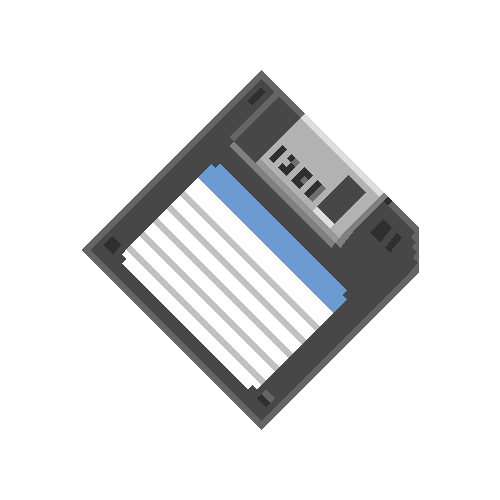
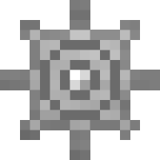

Hey! My name is Bastián Valencia Ull, a pregrad student in the Department of Computer Science at the University of Chile. I also work part-time at Tecnoback as a Software Developer.
I've got a profound interest in computers in general, but mainly in the Cybersecurity and Software Engineering fields, having some explorations into Machine Learning aswell.
I enjoy writing programs in low level languages such as Rust, C and C++. Besides that, I really like Object Oriented Programming, specifically in Scala.
I am fascinated by trying different tools, libraries and frameworks in the projects I work on, with the objective of building safe, scalable and efficient software.
I am also passionate about learning new things in a constantly evolving world.
Apart from this nerdy stuff, I love animals (dogs specially), music and movies. I love going to the theatre and playing guitar (I play guitar in a local alternative rock band!!).

Projects
Technical SkillsJanuary 2026 - Present | Lo Barnechea, Santiago
March 2025 - Present | Santiago, Chile
January 2025 - February 2025 | Ciudad Empresarial, Huechuraba
B.Sc. Civil Engineering in Computer Science | March 2023 - Present | Santiago, Chile
Acknowledgments: Outstanding Student in 2023, 2024 and 2025.
You can reach me via email at: bastian.valencia@ug.uchile.cl